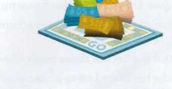
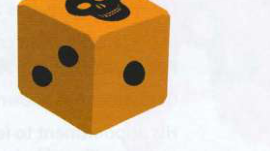
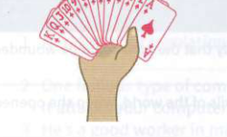
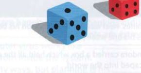
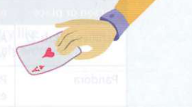

Exercises
19.1
Look at A opposite. Which idioms do these pictures make you think of?
1
play/ keep ...................................... .
3

M..............................................................
5

dicing .................................................. .
2

hold ...................................................... .
4

the dice .............................................. .
6

play ....................................................... .
19.2
Rewrite the underlined part of each sentence using an idiom from 19.1.
1
I felt I was taking a huge risk riding at high speed on the back of his motorbike.
2
I didn't tell anyone about my plans and didn't mention that I was going to resign soon.
3
He's so rich. He spends money as if it were toy money.
4
The barrister used an advantage none of us knew about and revealed the final piece of evidence.
5
I wanted a job in politics, but felt I was unlikely to succeed as I had no personal contacts in the political world.
6
Masa is so much more qualified and experienced than I am. He has all the advantages if we both apply for the same job.
19.3
Read these statements and answer the questions.
a
Joseph just sat there with a blank expression on his face.
b
I think Ivana was unfair when she mentioned to her boss that Kim had once been in prison.
c
Jung said he was too busy to come with us this time, so we went without him.
d
The news obviously surprised and upset Gina a lot.
1
Who said something that was below the belt? .................................................
2
Who took a rain check? .......................................
3
Who was knocked for six by something? ................ .................................. .
4
Who was poker-faced? ............................................. .
19.4
Complete each idiom.
1
Jin's in a very powerful position; he ......................................................... all the .................................................... .
2
The teacher has ......................................................... the ......................................................... so many times that none of the students knows what the rules are any more.
3
Liam is very direct with people; he never ......................................................... any ......... .............................................. .
4
What? The headteacher changed the holiday from a whole day to a half day! Poor kids! It's just not ......................................................... , is it?
5
The two presidential candidates have played ....................................... ................ recently and have made quite personal attacks on each other.
6
Advertising on TV is not the same as it was 20 years ago; it's a whole ........................ ...... now.
7
Everyone felt ......................................................... after six hours of political debate.
8
At 10 pm on the night of the election, the president threw ...................................................... and admitted he had lost.